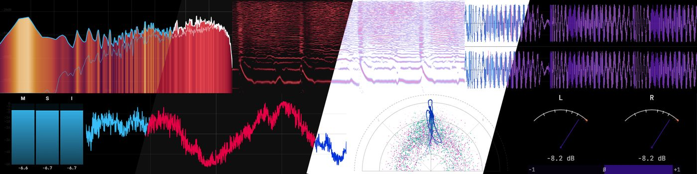
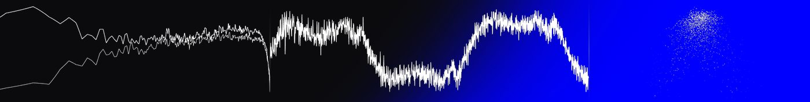

01 · 机架与排布
每个仪表单独设置，再拼成一块自己的机架
八种仪表各自独立配置：FFT 尺寸、频谱倾斜、Log / Mel / 线性刻度、触发方式、0 VU 参考与缩放比例，改一个不会牵动其他仪表。
尺寸与位置可随手拖动，支持的仪表还能旋转、拆成独立窗口，或置顶在其他程序之上；整套布局可存成配置，换了场合再调回来。Windows 下还能让机架停靠在一个显示器上，为它预留屏幕空间。


软件原版界面：各种实时仪表可以摆成一块机架，同一屏内同时查看频谱、声谱、波形与电平。本页截图取自原版（英文界面）。
八种仪表各自独立配置：FFT 尺寸、频谱倾斜、Log / Mel / 线性刻度、触发方式、0 VU 参考与缩放比例，改一个不会牵动其他仪表。
尺寸与位置可随手拖动，支持的仪表还能旋转、拆成独立窗口，或置顶在其他程序之上；整套布局可存成配置，换了场合再调回来。Windows 下还能让机架停靠在一个显示器上，为它预留屏幕空间。

线条、填充与热度色随主题整体替换；瀑布图可在主题色与热度色之间切换，矢量示波器可开启多频段 RGB，按颜色分辨各频段的相位分布。
界面以深色为底，仪表颜色只作用于显示，测量读数与数值本身不受影响。

桌面版、插件版与终端界面共用同一套分析核心，下面按官方仓库的顺序逐项列出，括号内为原版界面上的英文名称，汉化时以左侧中文译名为准。
截图取自软件原版（英文界面），用于说明各功能的位置与界面结构。汉化以桌面版界面与说明文本为主；插件版与终端界面如何处理，确定后会另行说明。
同一款软件提供三种获取方式：希望直接使用中文界面，按习惯在安装包与便携版里选一个即可，两者内容一致；需要对照原文或自行配置，则取用官方原版。
上游发布的原始安装包，界面为英文，未作任何改动。需要对照原文、自行配置或自行处理汉化，均以此版本为基础。
已内置中文界面，双击安装并自动创建开始菜单项与卸载项，适合固定在一台机器上长期使用。版本对应上游 0.4.0-beta。
解压后直接运行，不写入系统、不留安装记录，可放入 U 盘随身携带；与安装包内容一致，只是打包方式不同。
Prism 是一款免费开源的音频分析与电平表机架，Windows、macOS 与 Linux 均可运行。既可监听系统声音，也可监听某个输入设备，把需要的实时仪表摆成自己的机架，存成配置随时调回。
Prism is a free, open-source audio analyzer and meter rack for Windows, macOS, and Linux. Monitor system audio or an input with a configurable set of real-time scopes and meters, arrange them however you like, and save the setup as a profile.
介绍文案取自 Prism 官方仓库 README，功能细节以该仓库为准